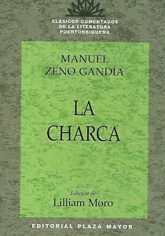

Informacion basica
La Charca es una novela escrita por Manuel Zeno Gandía. La novela se desarrolla en un ambiente rural puertorriqueno en donde se resalta la carencia de muchas necesidades básicas. Se clasifica como una obra naturalista ya que presenta muchos problemas de sus personajes en un entorno social.

El Naturalismo
Movimiento literario que surgió a finales del siglo XIX en Francia por oposición al romanticismo y que se caracteriza por su carácter metódico determinista y por reflejar con mucho realismo en sus obras la parte más cruda y desagradable de la realidad. El naturalismo llega a Puerto Rico a traves de los comentarios de la publicacion El Buscapiey la polemica periodística de los años 1889-1890.